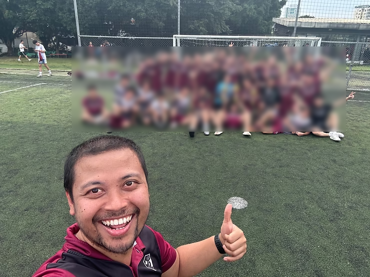

The school develops a mission, philosophy and/or strategy that includes a holistic approach to education that goes beyond academic development and encourages awareness beyond the individual and the immediate community. (0101-01-0200)

The HS Boys and Girls Soccer Teams participated in the Pearl River Conference Tournament in Dongguan. The girls came in 2nd and won the sportsmanship award. The sportsmanship award highlights ISNS girls' approach to the game — it's not just about winning, but winning with grace and humility.